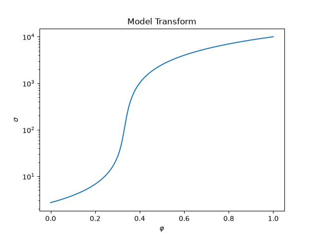
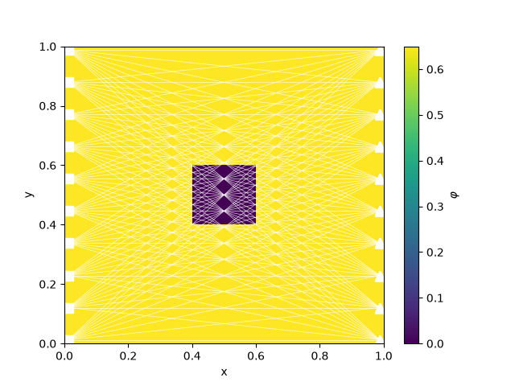
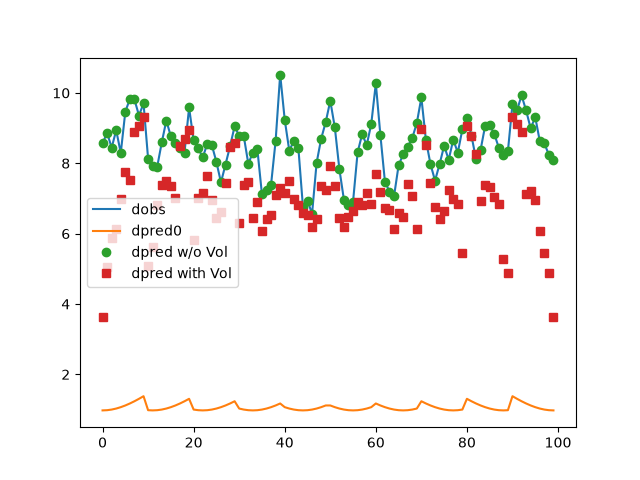
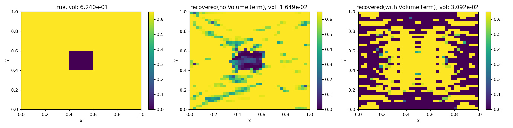

Note
Go to the end to download the full example code.
Straight Ray with Volume Data Misfit Term#
Based on the SEG abstract Heagy, Cockett and Oldenburg, 2014.
Heagy, L. J., Cockett, A. R., & Oldenburg, D. W. (2014, August 5). Parametrized Inversion Framework for Proppant Volume in a Hydraulically Fractured Reservoir. SEG Technical Program Expanded Abstracts 2014. Society of Exploration Geophysicists. doi:10.1190/segam2014-1639.1
This example is a simple joint inversion that consists of a
data misfit for the tomography problem
data misfit for the volume of the inclusions (uses the effective medium theory mapping)
model regularization




True Volume: 0.6240000000000001
/home/vsts/work/1/s/examples/20-published/plot_tomo_joint_with_volume.py:157: FutureWarning: The defaults for ProjectedGNCG will change in SimPEG 0.26.0. If you want to maintain the previous behavior, explicitly set 'cg_atol=1E-3' and 'cg_rtol=0.0'.
opt = optimization.ProjectedGNCG(maxIter=maxIter, lower=0.0, upper=1.0)
Running inversion with SimPEG v0.25.2.dev29+g5b53e8cb7
================================================= Projected GNCG =================================================
# beta phi_d phi_m f |proj(x-g)-x| LS iter_CG CG |Ax-b|/|b| CG |Ax-b| Comment
-----------------------------------------------------------------------------------------------------------------
0 2.50e-01 8.50e+04 0.00e+00 8.50e+04 0 inf inf
1 2.50e-01 3.95e+03 9.97e-01 3.95e+03 3.07e-02 0 5 5.63e-03 1.20e+01
/home/vsts/work/1/s/simpeg/maps/_property_maps.py:1505: UserWarning: Maximum number of iterations reached
return self._sc2phaseEMTSpheroidstransform(m)
2 2.50e-01 6.43e+02 8.39e-01 6.43e+02 3.29e+01 0 5 1.71e-03 4.93e-02
3 2.50e-01 1.86e+02 6.64e-01 1.86e+02 2.78e+01 1 5 1.36e+00 2.70e+02 Skip BFGS
4 2.50e-01 7.27e+01 6.65e-01 7.28e+01 1.39e+01 0 5 1.67e-01 4.06e+01
5 2.50e-01 2.61e+01 6.61e-01 2.63e+01 1.18e+01 0 5 2.00e-01 3.39e+01 Skip BFGS
6 2.50e-01 1.25e+01 6.60e-01 1.27e+01 9.96e+00 0 5 4.18e-01 2.73e+01 Skip BFGS
7 2.50e-01 4.03e+00 6.60e-01 4.19e+00 8.74e+00 0 5 2.03e-01 1.25e+01
8 2.50e-01 2.66e+00 6.61e-01 2.83e+00 6.42e+00 0 5 6.41e-01 1.13e+01 Skip BFGS
9 2.50e-01 1.14e+00 6.61e-01 1.30e+00 6.81e+00 0 5 1.91e-01 6.11e+00
10 2.50e-01 6.58e-01 6.61e-01 8.23e-01 4.02e+00 0 5 8.42e-01 6.78e+00 Skip BFGS
11 2.50e-01 4.06e-01 6.62e-01 5.72e-01 3.49e+00 0 5 3.88e-01 3.46e+00
12 2.50e-01 1.97e-01 6.62e-01 3.63e-01 2.89e+00 0 5 6.64e-01 3.59e+00
13 2.50e-01 7.29e-02 6.62e-01 2.39e-01 2.62e+00 0 5 4.83e-01 2.07e+00
14 2.50e-01 3.56e-02 6.63e-01 2.01e-01 1.72e+00 0 5 5.47e-01 1.26e+00
15 2.50e-01 1.62e-02 6.63e-01 1.82e-01 1.31e+00 0 5 6.54e-01 8.59e-01
------------------------- STOP! -------------------------
1 : |fc-fOld| = 1.9363e-02 <= tolF*(1+|f0|) = 8.4952e+03
1 : |xc-x_last| = 7.1200e-02 <= tolX*(1+|x0|) = 1.0000e-01
0 : |proj(x-g)-x| = 8.6838e-01 <= tolG = 1.0000e-01
0 : |proj(x-g)-x| = 8.6838e-01 <= 1e3*eps = 1.0000e-02
1 : maxIter = 15 <= iter = 15
------------------------- DONE! -------------------------
Total recovered volume (no vol misfit term in inversion): 0.016489115958432252
/home/vsts/work/1/s/examples/20-published/plot_tomo_joint_with_volume.py:172: FutureWarning: The defaults for ProjectedGNCG will change in SimPEG 0.26.0. If you want to maintain the previous behavior, explicitly set 'cg_atol=1E-3' and 'cg_rtol=0.0'.
opt2 = optimization.ProjectedGNCG(maxIter=maxIter, lower=0.0, upper=1.0)
Running inversion with SimPEG v0.25.2.dev29+g5b53e8cb7
================================================= Projected GNCG =================================================
# beta phi_d phi_m f |proj(x-g)-x| LS iter_CG CG |Ax-b|/|b| CG |Ax-b| Comment
-----------------------------------------------------------------------------------------------------------------
0 2.50e-01 1.20e+05 0.00e+00 1.20e+05 0 inf inf
1 2.50e-01 7.85e+03 8.49e-01 7.85e+03 2.22e+01 0 5 8.67e-02 1.27e+02
2 2.50e-01 7.84e+03 8.21e-01 7.84e+03 2.66e+01 4 5 3.51e-01 1.96e+02
3 2.50e-01 7.83e+03 8.04e-01 7.83e+03 2.61e+01 4 5 6.15e-01 3.52e+02 Skip BFGS
4 2.50e-01 7.82e+03 7.99e-01 7.82e+03 2.61e+01 6 5 5.08e-01 1.94e+02 Skip BFGS
5 2.50e-01 7.70e+03 7.86e-01 7.70e+03 2.52e+01 3 5 6.91e-01 2.82e+02 Skip BFGS
6 2.50e-01 7.68e+03 7.80e-01 7.68e+03 2.53e+01 5 5 6.35e-01 2.70e+02
------------------------------------------------------------------
0 : ft = 7.6868e+03 <= alp*descent = 7.6837e+03
1 : maxIterLS = 10 <= iterLS = 10
------------------------- End Linesearch -------------------------
The linesearch got broken. Boo.
Total volume (vol misfit term in inversion): 0.03091844598175409
import numpy as np
import scipy.sparse as sp
import matplotlib.pyplot as plt
from simpeg.seismic import straight_ray_tomography as tomo
import discretize
from simpeg import (
maps,
utils,
regularization,
optimization,
inverse_problem,
inversion,
data_misfit,
objective_function,
)
class Volume(objective_function.BaseObjectiveFunction):
r"""
A regularization on the volume integral of the model
.. math::
\phi_v = || \int_V m dV - \text{knownVolume} ||^2
"""
def __init__(self, mesh, knownVolume=0.0, **kwargs):
self.mesh = mesh
self.knownVolume = knownVolume
super().__init__(**kwargs)
@property
def knownVolume(self):
"""known volume"""
return self._knownVolume
@knownVolume.setter
def knownVolume(self, value):
self._knownVolume = utils.validate_float("knownVolume", value, min_val=0.0)
def __call__(self, m):
return (self.estVol(m) - self.knownVolume) ** 2
def estVol(self, m):
return np.inner(self.mesh.cell_volumes, m)
def deriv(self, m):
# return (self.mesh.cell_volumes * np.inner(self.mesh.cell_volumes, m))
return (
2
* self.mesh.cell_volumes
* (self.knownVolume - np.inner(self.mesh.cell_volumes, m))
) # factor of 2 from deriv of ||estVol - knownVol||^2
def deriv2(self, m, v=None):
if v is not None:
return 2 * utils.mkvc(
self.mesh.cell_volumes * np.inner(self.mesh.cell_volumes, v)
)
else:
# TODO: this is inefficent. It is a fully dense matrix
return 2 * sp.csc_matrix(
np.outer(self.mesh.cell_volumes, self.mesh.cell_volumes)
)
def run(plotIt=True):
nC = 40
de = 1.0
h = np.ones(nC) * de / nC
M = discretize.TensorMesh([h, h])
y = np.linspace(M.cell_centers_y[0], M.cell_centers_x[-1], int(np.floor(nC / 4)))
rlocs = np.c_[0 * y + M.cell_centers_x[-1], y]
rx = tomo.Rx(rlocs)
source_list = [
tomo.Src(location=np.r_[M.cell_centers_x[0], yi], receiver_list=[rx])
for yi in y
]
# phi model
phi0 = 0
phi1 = 0.65
phitrue = utils.model_builder.create_block_in_wholespace(
M.gridCC, [0.4, 0.6], [0.6, 0.4], [phi1, phi0]
)
knownVolume = np.sum(phitrue * M.cell_volumes)
print("True Volume: {}".format(knownVolume))
# Set up true conductivity model and plot the model transform
sigma0 = np.exp(1)
sigma1 = 1e4
if plotIt:
fig, ax = plt.subplots(1, 1)
sigmaMapTest = maps.SelfConsistentEffectiveMedium(
nP=1000, sigma0=sigma0, sigma1=sigma1, rel_tol=1e-1, maxIter=150
)
testphis = np.linspace(0.0, 1.0, 1000)
sigetest = sigmaMapTest * testphis
ax.semilogy(testphis, sigetest)
ax.set_title("Model Transform")
ax.set_xlabel(r"$\varphi$")
ax.set_ylabel(r"$\sigma$")
sigmaMap = maps.SelfConsistentEffectiveMedium(M, sigma0=sigma0, sigma1=sigma1)
# scale the slowness so it is on a ~linear scale
slownessMap = maps.LogMap(M) * sigmaMap
# set up the problem and survey
survey = tomo.Survey(source_list)
problem = tomo.Simulation(M, survey=survey, slownessMap=slownessMap)
if plotIt:
_, ax = plt.subplots(1, 1)
cb = plt.colorbar(M.plot_image(phitrue, ax=ax)[0], ax=ax)
survey.plot(ax=ax)
cb.set_label(r"$\varphi$")
# get observed data
data = problem.make_synthetic_data(phitrue, relative_error=0.03, add_noise=True)
dpred = problem.dpred(np.zeros(M.nC))
# objective function pieces
reg = regularization.WeightedLeastSquares(M)
dmis = data_misfit.L2DataMisfit(simulation=problem, data=data)
dmisVol = Volume(mesh=M, knownVolume=knownVolume)
beta = 0.25
maxIter = 15
# without the volume regularization
opt = optimization.ProjectedGNCG(maxIter=maxIter, lower=0.0, upper=1.0)
opt.remember("xc")
invProb = inverse_problem.BaseInvProblem(dmis, reg, opt, beta=beta)
inv = inversion.BaseInversion(invProb)
mopt1 = inv.run(np.zeros(M.nC) + 1e-16)
print(
"\nTotal recovered volume (no vol misfit term in inversion): "
"{}".format(dmisVol(mopt1))
)
# with the volume regularization
vol_multiplier = 9e4
reg2 = reg
dmis2 = dmis + vol_multiplier * dmisVol
opt2 = optimization.ProjectedGNCG(maxIter=maxIter, lower=0.0, upper=1.0)
opt2.remember("xc")
invProb2 = inverse_problem.BaseInvProblem(dmis2, reg2, opt2, beta=beta)
inv2 = inversion.BaseInversion(invProb2)
mopt2 = inv2.run(np.zeros(M.nC) + 1e-16)
print("\nTotal volume (vol misfit term in inversion): {}".format(dmisVol(mopt2)))
# plot results
if plotIt:
fig, ax = plt.subplots(1, 1)
ax.plot(data.dobs)
ax.plot(dpred)
ax.plot(problem.dpred(mopt1), "o")
ax.plot(problem.dpred(mopt2), "s")
ax.legend(["dobs", "dpred0", "dpred w/o Vol", "dpred with Vol"])
fig, ax = plt.subplots(1, 3, figsize=(16, 4))
im0 = M.plot_image(phitrue, ax=ax[0])[0]
im1 = M.plot_image(mopt1, ax=ax[1])[0]
im2 = M.plot_image(mopt2, ax=ax[2])[0]
for im in [im0, im1, im2]:
im.set_clim([0.0, phi1])
plt.colorbar(im0, ax=ax[0])
plt.colorbar(im1, ax=ax[1])
plt.colorbar(im2, ax=ax[2])
ax[0].set_title("true, vol: {:1.3e}".format(knownVolume))
ax[1].set_title(
"recovered(no Volume term), vol: {:1.3e} ".format(dmisVol(mopt1))
)
ax[2].set_title(
"recovered(with Volume term), vol: {:1.3e} ".format(dmisVol(mopt2))
)
plt.tight_layout()
if __name__ == "__main__":
run()
plt.show()
Total running time of the script: (0 minutes 23.929 seconds)
Estimated memory usage: 329 MB